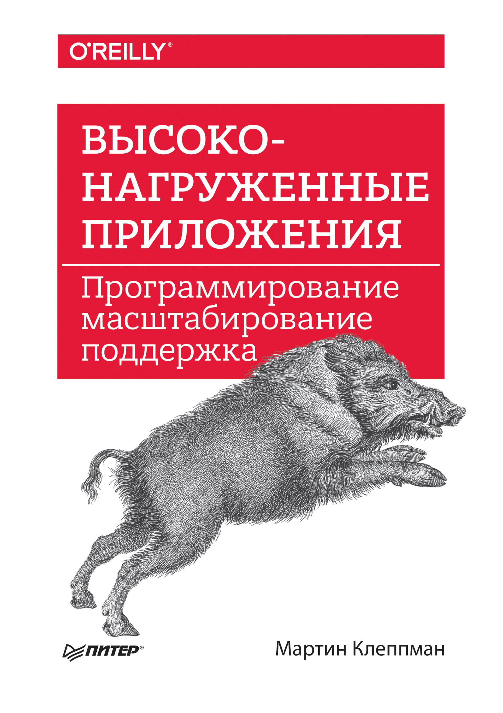

В библиографии книги Мартина Клеппмана «Высоконагруженные приложения» собраны сотни статей, докладов и исследовательских работ. Переводить их все подряд нецелесообразно, поэтому здесь остаются только законченные материалы и небольшой приоритетный список.
Если лицензия исходного материала не разрешает публикацию полного перевода, вместо него будет опубликован подробный русскоязычный конспект со ссылкой на оригинал.